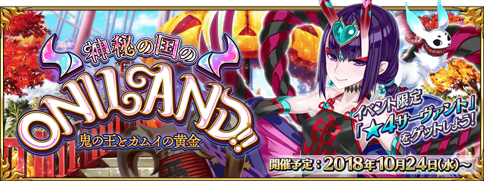
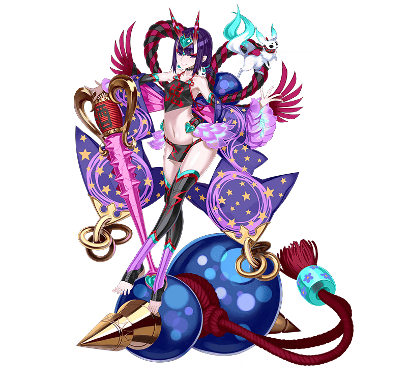

◆活動舉辦時間◆
2018年10月24日(三) 17:00～(預定)
◆活動概要◆
舉辦期間限定活動「神秘之國ＯＮＩＬＡＮＤ!! ～鬼王與卡姆伊的黃金～」！
歡迎來到安心又安全、愛與和平的娛樂殿堂！
本Land來者不拒，歡迎所有的客人！
本活動中進行主線關卡的話，活動限定「★4(SR)Servant」會以期間限定加入。
再推進主線關卡，讓活動限定「★4(SR)Servant」正式加入吧！

◆活動參加條件◆
只限通過第2部 第2章「Lostbelt No.2 無間冰焰世紀 諸神黃昏 不滅之火的好漢」的Master才能參加
※不需要通過亞種特異點(從Ⅰ到Ⅳ)。

自2018年10月6日(六) 17:00，舉辦主線關卡第1部的AP消耗1/4、主線關卡第2部的AP消耗1/2的宣傳活動！
還沒通過做為本活動參加條件的第2部 第2章「Lostbelt No.2 無間冰焰世紀 諸神黃昏 不滅之火的好漢」的Master，請藉此機會通過吧！
詳情請在此處的公告確認。
◆舉辦期間◆
2018年10月6日(六) 17:00～10月24日(三) 11:59
※自由關卡為對象外。
※強化關卡、幕間物語、曜日關卡為對象外。